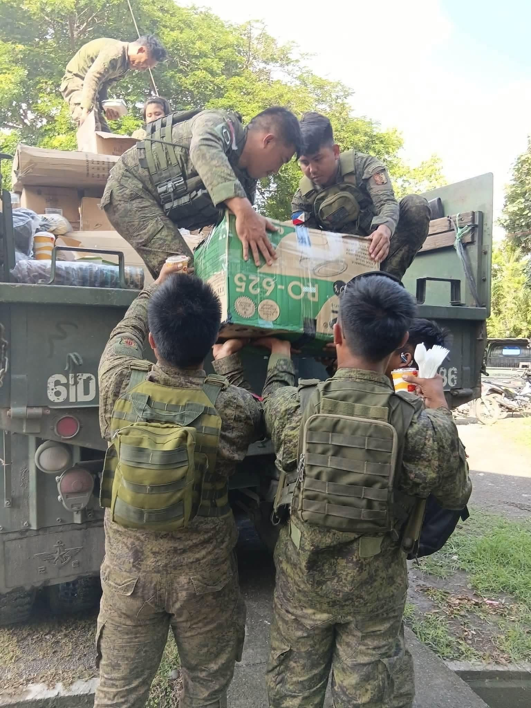
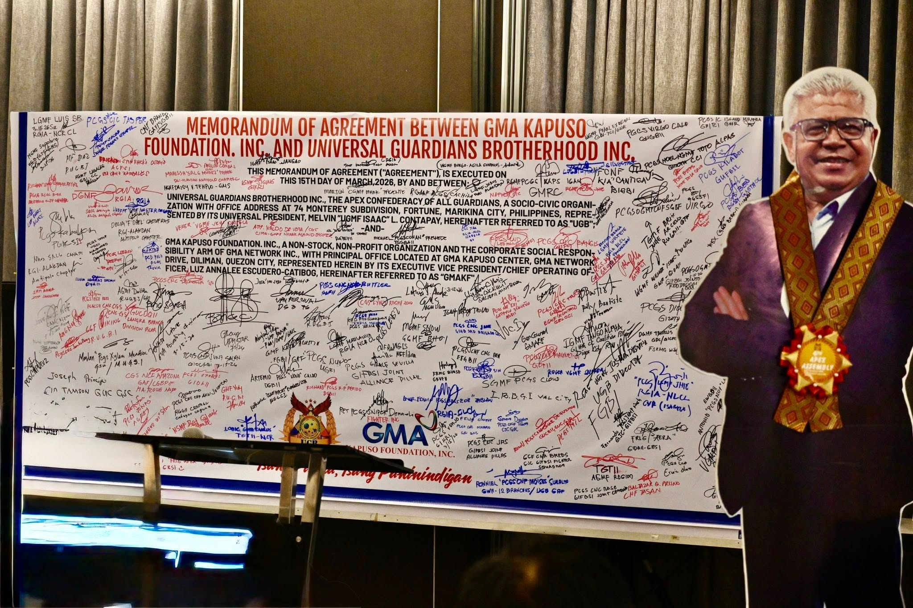

Community Service
Community Service
Operation Bayanihan
A visual record of UGB community participation, relief preparation and assistance activities.
View Photo Story →
UGB Media Center
A central media space for UGB videos, photographs, activity documentation, advocacy materials and community stories.
Explore UGB Media
Activities become more meaningful when the stories behind them are easy to find and preserve.
This proposal Media Center organizes visual content into clear areas for videos, photo stories, community activities, partnerships and advocacy.
Proposal presentation — media items shown here use available UGB materials and sample presentation content.Featured Media
Selected visual stories highlighting community service, organizational activities and partnerships.
Community Service
A visual record of UGB community participation, relief preparation and assistance activities.
View Photo Story → Health & Wellness
Health & Wellness
 Partnership
Partnership
UGB Videos
The proposed Media Center can organize official videos, activity coverage, interviews and community features in one accessible video library.
Demo video presentation area. An approved UGB video can be connected here when final media is selected.
Community service and relief activity coverage.
Activity highlights and visual documentation.
Organizational partnership and collaboration stories.
Photo Stories
Photo stories can combine approved photographs with short descriptions to document UGB activities in a clear and engaging format.
A proposed visual story highlighting volunteers, participation and community support.

Media Gallery
A proposal gallery showing how UGB photographs can be organized by activity, program, partnership or campaign.


Advocacy Media
Advocacy materials can have a dedicated visual area where approved UGB campaigns, public information graphics and educational media can be presented clearly.
UGB-published advocacy material shown as part of the proposal Media Center.
Proposed Media Experience
For this proposal, the gallery and media cards are static. The complete operating system can later provide authorized content management and publishing controls.
Organize approved UGB videos by topic or activity.
Combine photographs and context into visual stories.
Keep event and community documentation organized.
Present approved public information in one place.
Connect visitors to UGB's official social channels and extend the reach of approved organizational content.